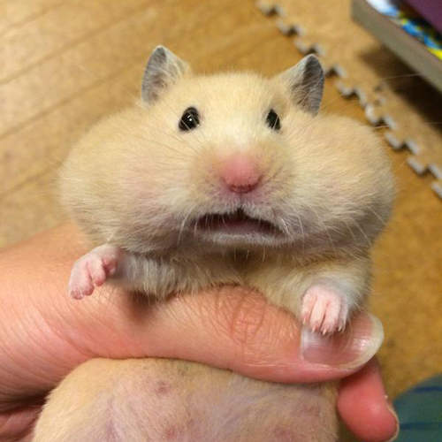
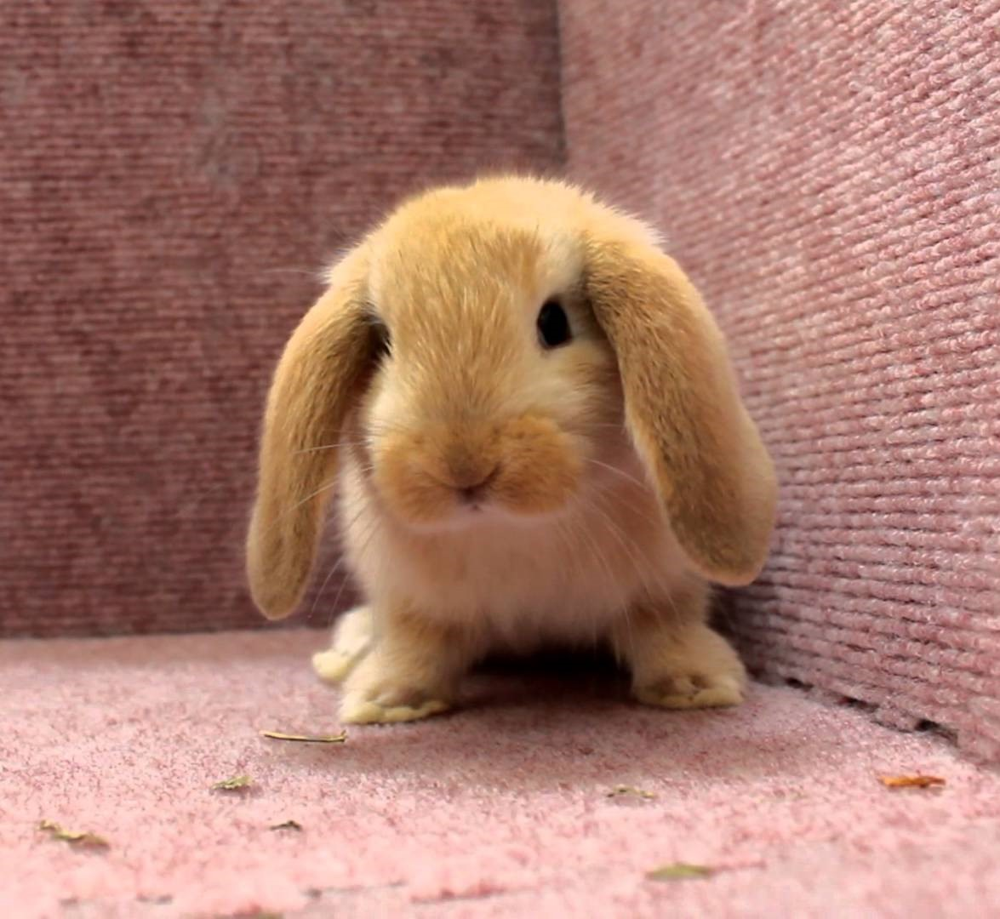
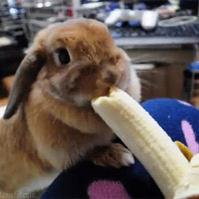

Created By Feiyan Weng | DMS 121
When I was a child, she had strong interest in animals. She loved those cute pets with thick fur, such as dog, cat, hamster, and rabbit. Raising a pet was complex, and she would need to put a lot of energy on them. They are not only a pet, but also her friends. If she thought she didn't have the confidence to take care of them for their whole lives, then she would not choose to raise them from the beginning.
When I was a child, he had strong interest in animals. He loved those cute pets with thick fur, such as dog, cat, hamster, and rabbit. Raising a pet was complex, and he would need to put a lot of energy on them. They are not only a pet, but also his friends. If he thought he didn't have the confidence to take care of them for their whole lives, then he would not choose to raise them from the beginning.
Dog is a very gentle animal. I had one dog when I was a primary school student. This dog was not a species of expensive dog, but he was my's playmates during the childhood. As a child, I didn't know much about how to nurture and take care of a dog, and one day, due to a small mistake, my's dog ran out from an opened window, and I could not find him anymore.

I was a dog person when I was a primary school student. I had one dog during the childhood. However, as I grew up, I felt stronger interest in cats. Not like dogs, cats are more elegant and indifferent. I was attracted by this trait, and fell in love with cats. Cats' expressions were different from dogs. When they felt angry, happy, or afraid, the difference was just a tiny bit of details. It was really interesting to explore and understand the cat language.
When I was a primary school student, I brought a hamster. Hamster was very easy to feed, and I treated this hamster as a friend. Unluckily, I was bitten by the hamster two weeks later. It made my's mom became nervous, and she refused to let me feed the hamster anymore. In that situation, I would need to give the hamster away. It made me feel unhappy for several months, and I still remember that hamster until today.

When I was young, I had some experience of raising the rabbit. Rabbit was a very fragile creature, and it was really hard to let them know when to drain and what time they should eat. If you didn't control their food intake, they would keep eating until they consumed all the food. They are also afraid of cold, which might even kill them. Overall, the experience of raising a rabbit was not as good as taking care of a cat.
